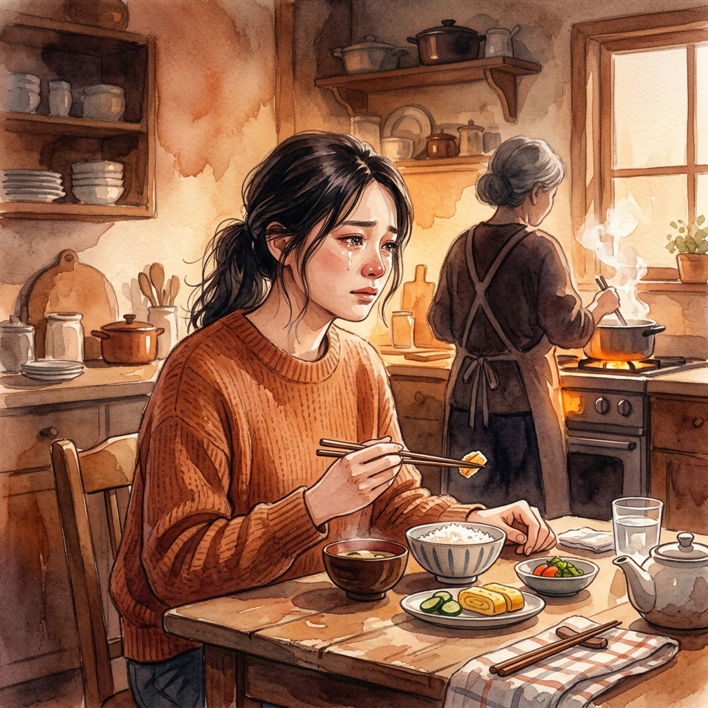

The smell hit her before she even sat down. Her mother had made niú ròu miàn — the beef noodle soup her father used to request every Sunday. She had not eaten it in six years.

She precipitated nothing. She just picked up her chopsticks. But the first sip of broth did something she was not ready for: it pulled her back to a kitchen table in 2008, her father's hands wrapped around the same bowl, his reading glasses still on.
The memory arrived intact — not blurry the way old things usually are, but sharp. The sound of the spoon against ceramic. The way he always blew on it three times before drinking.

She put her chopsticks down. Her mother, standing at the stove, did not turn around. Maybe she already knew. Maybe that was the whole point of making it today.
She almost cried. She did not. She picked up the chopsticks again and finished every drop.